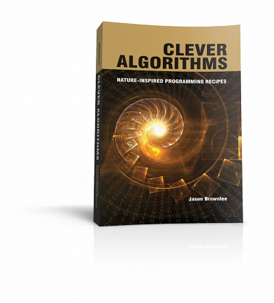

|
Need help getting started with Genetic Algorithms, Neural Networks or Swarm Intelligence?

Nature-Inspired Algorithms are Fascinating!
But implementing them can be frustrating.
The algorithm descriptions are incomplete, inconsistent and distributed across academic papers, websites and code.
There are so many algorithms to choose from, it can feel overwhelming.
Algorithms Handbook
You need a handbook of algorithm recipes!
Each algorithm is described in a consistent and structured way with a working code example.
You need: Clever Algorithms: Nature-Inspired Programming Recipes.
Clever Algorithms is a handbook of recipes for computational problem solving.
Algorithms are drawn from sub-fields of Artificial Intelligence such as Computational Intelligence, Biologically Inspired Computation, and Metaheuristics.
This 438-page PDF ebook contains...
- ...45 algorithm descriptions
- ...best practice usage heuristics for each algorithm
- ...pseudo-code listing of each algorithm
- ...code listings of each algorithm in Ruby (source code files included)
- ...references for further reading including the primary sources for each algorithm
Read online for free
45 Algorithm Descriptions
The book includes an introduction to artificial intelligence and related fields as well as advanced topics like algorithm testing and visualization.
The 45 algorithms are grouped into chapters, as follows:
- Stochastic Algorithms: Random Search, Adaptive Random Search, Stochastic Hill Climbing, Iterated Local Search, Guided Local Search, Variable Neighborhood Search, GRASP, Scatter Search, Tabu Search and Reactive Tabu Search.
- Evolutionary Algorithms: Genetic Algorithm, Genetic Programming, Evolution Strategies, Differential Evolution, Evolutionary Programming, Grammatical Evolution, Gene Expression Programming, Learning Classifier System, NSGA and SPEA.
- Physical Algorithms: Simulated Annealing, Extremal Optimization, Harmony Search, Cultural Algorithm and the Memetic Algorithm
- Probabilistic Algorithms: PIBL, UMDA, Compact Genetic Algorithm, Bayesian Optimization Algorithm and the Cross-Entropy Method.
- Swarm Algorithms: Particle Swarm Optimization, Ant System, Ant Colony Optimization, Bees Algorithm and the Bacterial Foraging Optimization Algorithm.
- Immune Algorithms: Clonal Selection Algorithm, Negative Selection Algorithm, Artificial Immune Recognition System, Immune Network Algorithm and the Dendritic Cell Algorithm.
- Neural Algorithms: Perceptron, Back-Propagation, Hopfield Network, Learning Vector Quantization and the Self-Organizing Map.
All algorithm descriptions include a working implementation of the algorithm in Ruby. The standalone ruby files for each algorithm are also included in your download.
This book is for you if...
- ...you have a difficult engineering or scientific problem and you need an optimization algorithm, this book will tell you which algorithms are suitable for your problem and how to configure them.
- ...you need some code to get started with a Genetic Algorithm, Particle Swarm, Neural Network or other modern Metaheuristic, this book provides complete and working examples of each algorithm in the Ruby Programming language.
- ...you are interested or just getting started in the field of Computational Intelligence and Biologically Inspired Computation and feel overwhelmed by the size of the field, this book describes 45 nature-inspired algorithms from across the field of Metaheuristics in a consistent manner and groups them by theme.
Book Blurb
Implementing an Artificial Intelligence algorithm is difficult. Algorithm descriptions may be incomplete, inconsistent, and distributed across a number of papers, chapters and even websites. This can result in varied interpretations of algorithms, undue attrition of algorithms, and ultimately bad science.
This book is an effort to address these issues by providing a handbook of algorithmic recipes drawn from the fields of Metaheuristics, Biologically Inspired Computation and Computational Intelligence, described in a complete, consistent, and centralized manner. These standardized descriptions were carefully designed to be accessible, usable, and understandable. Most of the algorithms described were originally inspired by biological and natural systems, such as the adaptive capabilities of genetic evolution and the acquired immune system, and the foraging behaviors of birds, bees, ants and bacteria. An encyclopedic algorithm reference, this book is intended for research scientists, engineers, students, and interested amateurs.
Each algorithm description provides a working code example in the Ruby Programming Language.
About the Author
Who is behind this?
Hey, I’m Jason Brownlee, a father, husband, developer and author. I have written books on artificial intelligence algorithms and I have a Masters and a PhD in Artificial Intelligence.
I started out as a programmer interested in machine learning and designed and completed small projects to teach myself about the field. This lead down a path of quitting my job, studying as an AI researcher and eventually surfacing back into industry as a programmer again.
I now work in that perfect mix of developing scientific software for real users with actual problems.
I live in Melbourne, Australia and will happily talk machine learning all day long.
Follow me on
Homepage |
GitHub |
LinkedIn |
GoodReads |
Twitter (X) |
Bluesky |
Facebook
|